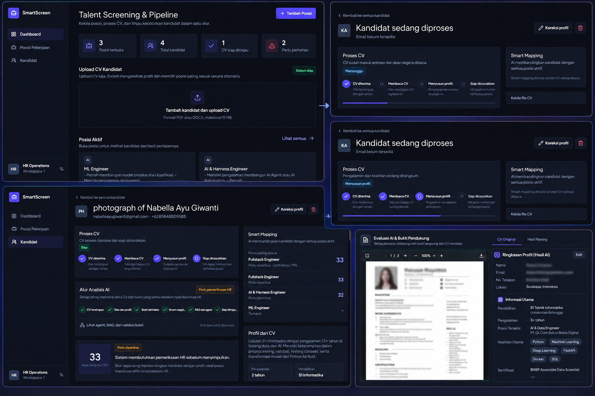

AI-Powered CV Screening & Talent Matching
Next-Gen Multi-Agent RAG & Evidence-Based Structured Candidate Evaluation Platform

AI-Powered CV Screening & Talent Matching System adalah sistem cerdas berbasis Artificial Intelligence dan Multi-Agent Retrieval-Augmented Generation (RAG) yang dirancang untuk mengotomatisasi proses screening resume (CV) serta mencocokkan profil kandidat dengan spesifikasi kebutuhan lowongan pekerjaan secara mendalam, objektif, dan transparan.
Sistem mengombinasikan LlamaParse untuk deep document parsing, chunking cerdas dengan Chonkie, vector embedding via Chroma Cloud, serta multi-agent evaluation framework (Agno) yang didukung oleh model LLM mutakhir seperti NVIDIA Nemotron, OpenAI, dan OpenRouter.
Dengan mekanisme Hybrid Retrieval (Semantic + Keyword Search), evaluasi multi-dimensi (Skill, Experience, Education, Achievement, Domain Knowledge, dan Career Consistency), sistem menyajikan Weighted Scoring, Confidence Score, kutipan bukti riil (Evidence-Based Citations), serta dilengkapi AI Guardrails untuk mencegah halusinasi dan bias seleksi.
- CV Parsing & Candidate Profile Extraction: Mengekstrak informasi kompleks dari dokumen PDF/Word resume secara presisi ke dalam skema profil kandidat yang terstruktur menggunakan LlamaParse.
- Smart Candidate-Job Matching: Pencocokan kandidat terhadap Job Description (JD) dengan algoritma penilaian komprehensif berbasis kesesuaian keahlian dan kualifikasi peran.
- Hybrid Semantic + Keyword Retrieval: Menggabungkan pencarian makna kontekstual (Dense Vector Embeddings) dan pencarian kata kunci presisi (BM25/Sparse Keyword) untuk retrieval data profil kandidat yang superior.
- RAG & Evidence Retrieval: Setiap hasil penilaian dan skor dilengkapi kutipan bukti (evidence citations) langsung dari riwayat pengalaman dan proyek pada CV kandidat.
- Multi-Agent Evaluation Framework: Evaluasi kolaboratif menggunakan arsitektur Multi-Agent (Agno) di mana agen-agen khusus menganalisis dimensi kompetensi yang berbeda secara independen dan objektif.
- Multi-Dimensional Scoring: Penilaian holistik meliputi Skill Match, Experience Relevance, Education & Certifications, Quantifiable Achievements, Domain Knowledge, dan Career Consistency.
- Weighted Scoring & Confidence Score: Perhitungan skor terbobot yang dapat disesuaikan per departemen/posisi kerja disertai indikator tingkat kepercayaan (Confidence Score) sistem terhadap kelayakan rekomendasi.
- AI Guardrails & Bias Prevention: Protokol keamanan AI untuk membatasi halusinasi model, menjaga konsistensi penalaran fakta, dan memastikan penilaian bebas dari bias diskriminatif.
- Candidate Pipeline & HR Dashboard: Antarmuka web modern berbasis Vue 3 + Tailwind CSS untuk mengelola kandidat, memfilter peringkat pelamar terbaik, melihat breakdown perbandingan, dan tracking status rekrutmen.
- Background Processing & Asynchronous Queue: Pemrosesan parsing CV dalam jumlah massal (batch processing) berjalan secara asinkron di latar belakang tanpa menghambat alur kerja pengguna.
- Parsing & Extraction Agent: Mengubah dokumen resume tidak terstruktur menjadi representasi JSON terstandarisasi dengan validasi skema data ketat.
- Semantic Chunking (Chonkie): Membagi dokumen resume secara cerdas berdasarkan konteks hierarki informasi (riwayat pekerjaan, edukasi, proyek, sertifikasi).
- Vector Store (Chroma Cloud): Pengindeksan vektor berdimensi tinggi untuk retrieval semantik cepat dan query berbasis relevansi peran.
- Multi-LLM Orchestration: Memanfaatkan perpaduan NVIDIA Nemotron, OpenAI, dan OpenRouter untuk reasoning tingkat lanjut dan evaluasi multi-sudut pandang.
- Evidence Verifier Agent: Memvalidasi klaim kompetensi kandidat terhadap konteks pengalaman kerja aktual sebelum skor final diterbitkan.
- Memangkas 80%+ Waktu Screening: Tim HR dapat menyortir dan menganalisis ratusan resume kandidat dalam hitungan menit secara otomatis.
- Keputusan Rekrutmen Berbasis Data & Bukti: HR dan Hiring Manager mendapatkan ringkasan komparatif yang didukung poin bukti konkret, bukan sekadar intuisi.
- Peningkatan Kualitas Talent Shortlist: Meminimalkan risiko kandidat berkualitas tinggi terlewatkan (false negatives) akibat perbedaan format penulisan CV.
- Skalabilitas Perekrutan Skala Besar: Sistem mampu menangani volume pelamar tinggi tanpa penurunan konsistensi maupun akurasi penilaian.